PHẦN 1: NỀN TẢNG KHOA HỌC & GIẢI MÃ NHỮNG NGỘ NHẬN KINH ĐIỂN
— Vic Braden & Bill Bruns (Tennis 2000)
Lời Giới Thiệu: Kỷ Nguyên Mới Của Quần Vợt Hiện Đại
Vic Braden là một trong những huấn luyện viên và nhà nghiên cứu cơ sinh học có tầm ảnh hưởng sâu rộng nhất trong lịch sử quần vợt thế giới. Cùng với nhà báo thể thao Bill Bruns, ông đã thành lập Học viện Quần vợt Vic Braden (Vic Braden Tennis College) tại Coto de Caza, California. Tại đây, ông là người tiên phong áp dụng máy ảnh thể thao tốc độ cao, cảm biến điện học cơ bắp và máy tính phân tích quỹ đạo để giải phẫu từng mili-giây của mọi cú đánh quần vợt.
Cuốn sách Tennis 2000: Strokes, Strategy, and Psychology for a Lifetime không chỉ là bản cập nhật toàn diện cho kỷ nguyên mới mà còn là một cuộc cách mạng tư duy. Cuốn sách gạt bỏ toàn bộ những giáo điều xơ cứng, thay thế chúng bằng những nguyên lý khoa học thực nghiệm chính xác, giúp người chơi ở mọi lứa tuổi làm chủ kỹ thuật bền vững và thi đấu với niềm hứng khởi suốt cả cuộc đời.
Chương 1: Những Ngộ Nhận Phổ Biến & Các Nguyên Lý Cốt Lõi
Trước khi có thể tiếp thu một kỹ thuật chuẩn xác, người chơi cần phải dọn sạch những định kiến sai lầm đã bám rễ sâu trong tiềm thức. Dưới đây là những ngộ nhận phổ biến nhất mà Vic Braden đã vạch trần qua ống kính khoa học.
| Ngộ Nhận Truyền Thống | Sự Thật Khoa Học (Vic Braden) | Hệ Quả Thực Tế Trên Sân |
|---|---|---|
| "Sân tennis là một không gian khổng lồ." | Sân tennis thực chất rất hẹp khi nhìn từ góc độ bóng bay ở tốc độ cao. Khoảng cách từ baseline này đến baseline kia chỉ là 78 feet (23.77m). | Người chơi thường vung hết lực và đánh phẳng khiến bóng bay vọt ra ngoài vạch cuối sân trong sự ngỡ ngàng. |
| "Hãy đánh bóng lướt sát sạt mép lưới (Net-Skimmers)." | Lưới cao 3 feet ở giữa và 3.5 feet ở hai cột. Đánh sát mép lưới chỉ cho bạn biên độ sai số chưa đầy vài centimet. | Dẫn đến tỷ lệ tự đánh bóng rúc lưới lên tới hơn 70% các pha hỏng ăn của người chơi nghiệp dư. |
| "Đổ lỗi cho vợt: Vợt quá nặng, dây quá chùng hoặc điểm ngọt quá nhỏ." | Điểm tiếp xúc lệch tâm chỉ làm giảm một phần vận tốc, chứ không thể làm đổi hướng bóng tới 45 độ nếu góc mặt vợt được khóa chặt. | Người chơi liên tục đổi vợt tốn kém thay vì rèn luyện góc tiếp xúc mặt vợt và độ ổn định của cổ tay. |
| "Tôi không đủ thông minh hoặc thiếu khiếu phối hợp vận động." | Kỹ thuật quần vợt dựa trên lập trình vận động cơ bắp (Motor Programming). Mọi hệ thần kinh bình thường đều có thể học được. | Sự tự ti tâm lý làm tê liệt khả năng học hỏi và khiến cánh tay co cứng khi thực hiện cú đánh. |
Quy Tắc Cơ Bản: Cú Đánh Thắng Điểm Buồn Tẻ (The Same Old Boring Winner)
Vic Braden đúc kết định luật căn bản nhất của môn quần vợt: "Bạn không cần phải thực hiện những cú đánh thần sầu khiến khán giả trầm trồ. Bạn chỉ cần học cách đánh một cú bóng qua lưới ổn định, sâu vào cuối sân, lặp đi lặp lại một cách buồn tẻ nhưng chuẩn xác."
Trong quần vợt phong trào và bán chuyên nghiệp, hơn 80% điểm số kết thúc bởi lỗi tự đánh hỏng (Unforced Errors), chứ không phải do những cú đánh thắng điểm tuyệt đối (Winners). Khi bạn đưa một quả bóng sâu và an toàn qua lưới, bạn đang trao cho đối phương thêm một cơ hội để tự đánh hỏng hoặc cạn kiệt thể lực ("Give your opponent one more chance to take gas").
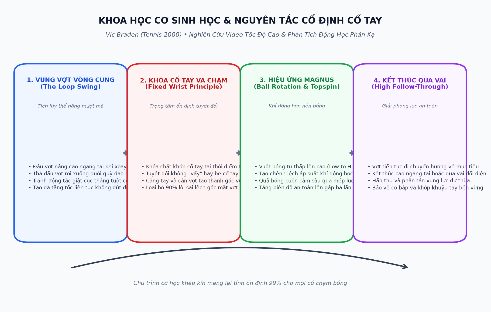
Chương 2: Xoáy Bóng Là Gì & Ai Cần Đến Nó? Chính Là Bạn!
Nhiều người chơi phong trào lầm tưởng rằng xoáy bóng (Topspin) chỉ dành cho các tay vợt chuyên nghiệp đánh bóng với tốc độ sấm sét. Vic Braden khẳng định: chính những người chơi nghiệp dư mới là những người cần đến xoáy bóng nhiều nhất để giữ bóng nằm trong sân.
1. Hiệu Ứng Khí Động Học Magnus
Khi quả bóng xoáy cuộn về phía trước (Topspin), không khí ở phía trên quả bóng chuyển động ngược chiều với luồng gió cản, tạo ra vùng áp suất cao. Ngược lại, không khí ở phía dưới di chuyển cùng chiều, tạo ra vùng áp suất thấp. Sự chênh lệch áp suất này sinh ra một lực hút kéo quả bóng chúi xuống mặt sân với gia tốc cực lớn.
2. Tăng Cường Biên Độ An Toàn Qua Lưới
Nhờ hiệu ứng Magnus kéo bóng xuống, bạn có thể đánh quả bóng bay cao hơn mép lưới từ 3 đến 5 feet mà bóng vẫn cắm sâu vào sân đối phương. Điều này triệt tiêu hoàn toàn nỗi ám ảnh đánh bóng rúc lưới, đồng thời vô hiệu hóa ý đồ bắt lưới của đối thủ nhờ quỹ đạo bóng chúi thấp xuống chân họ.
3. So Sánh Topspin Và Xoáy Cắt (Underspin)
Xoáy cắt (Underspin/Slice) tạo lực nâng khí động học giúp bóng bay bồng bềnh và lướt thấp sau khi nảy, rất hữu ích cho các cú cắt phòng thủ, tiếp cận lưới hoặc bỏ nhỏ. Tuy nhiên, nếu bạn muốn vung vợt với tốc độ tối đa từ cuối sân, xoáy cuộn Topspin là lựa chọn duy nhất đảm bảo bóng không bay vọt ra ngoài hàng rào.
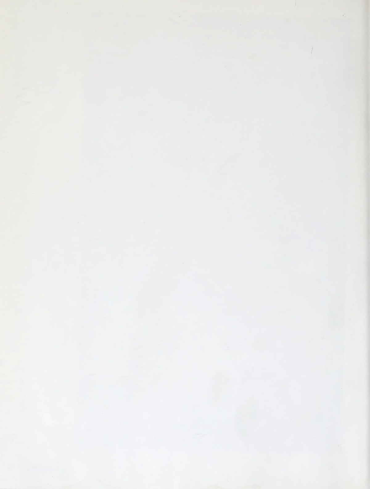
Nguyên Tắc Dẫn Hướng Cốt Lõi Cho Mọi Cú Đánh Nền Tảng
Để làm chủ quỹ đạo bóng trong thế kỷ mới, Vic Braden nhấn mạnh ba tiêu chuẩn kỹ thuật không thể thương lượng:
- Hạ thấp trọng tâm và đầu vợt (Get Lower Than The Ball): Đầu vợt phải rơi xuống vị trí thấp hơn quả bóng tối thiểu từ 12 đến 18 inches (30 - 45 cm) trước khi bắt đầu chuyển động tiến về phía trước. Đây là điều kiện tiên quyết để tạo ra quỹ đạo vuốt từ thấp lên cao (Low-to-High).
- Cố định khớp cổ tay tại thời điểm va chạm (The Fixed Wrist): Thời điểm quả bóng tiếp xúc với mặt lưới kéo dài chưa đầy 4 đến 5 phần nghìn giây. Mọi nỗ lực "vẩy" cổ tay vào thời điểm này đều là ảo tưởng thị giác và là nguyên nhân hàng đầu gây chấn thương viêm gân khuỷu tay (Tennis Elbow). Khớp cổ tay phải được khóa vững chãi cùng cẳng tay.
- Giải phóng đà vợt trọn vẹn (Uninhibited Follow-Through): Đừng bao giờ hãm vợt đột ngột sau khi chạm bóng. Đầu vợt cần tiếp tục quỹ đạo hướng về mục tiêu và kết thúc cao ngang tai hoặc qua vai đối diện để hấp thụ xung lực an toàn.
PHẦN 2: CƠ SINH HỌC CÚ THUẬN TAY & TRÁI TAY CHO THẾ KỶ MỚI
— Vic Braden
Chương 3: Cú Thuận Tay Hiện Đại (The Forehand)
Trong cuốn sách Tennis 2000, Vic Braden phân tích sự tiến hóa của cú thuận tay từ kỹ thuật cổ điển (đưa vợt thẳng ra sau theo đường thẳng) sang kỹ thuật hiện đại (vung vợt vòng cung - Loop Swing) kết hợp giữa thế đứng mở (Open Stance) và thế đứng đóng truyền thống.
1. Lựa Chọn Kiểu Cầm Vợt (The Grip)
Mỗi kiểu cầm vợt quyết định vị trí điểm tiếp xúc lý tưởng và độ cao thoải mái nhất khi chạm bóng:
- Cầm vợt kiểu Miền Đông (Eastern Forehand Grip): Khớp đốt ngón trỏ đặt tại cạnh số 3 của cán vợt. Đây là kiểu cầm vợt tự nhiên nhất, lòng bàn tay áp thẳng phía sau cán vợt, tạo cảm giác như bạn đang dùng bàn tay vỗ thẳng vào bóng. Điểm tiếp xúc lý tưởng là ngang hông và cách cơ thể một khoảng thoải mái.
- Cầm vợt kiểu Lục Giác / Bán Tây (Semi-Western Grip): Khớp ngón trỏ nằm ở cạnh số 4. Kiểu cầm này giúp mặt vợt tự nhiên hơi úp xuống khi chuẩn bị, tạo điều kiện thuận lợi nhất để chải xoáy cuộn Topspin với tốc độ cao và xử lý các quả bóng nảy cao ngang ngực.
- Cầm vợt kiểu Viễn Tây (Full Western Grip): Khớp ngón trỏ nằm ở cạnh số 5 đáy cán vợt. Kiểu cầm này tạo ra độ xoáy cực lớn trên mặt sân đất nện, nhưng đòi hỏi lực cổ tay và cẳng tay rất khỏe, đồng thời rất khó xoay sở trước các đường bóng trượt thấp sát mặt sân cỏ hoặc sân cứng.
2. Kỹ Thuật Vung Vợt Vòng Cung (The Loop Swing)
Máy quay tốc độ cao của Vic Braden chứng minh rằng những tay vợt hàng đầu thế giới không bao giờ kéo vợt giật cục theo đường thẳng. Họ vẽ một hình elip hoặc hình giọt nước mềm mại trong không gian:
Giai Đoạn Nâng Cao Đầu Vợt
Khi bóng đối phương vừa rời mặt vợt, bạn lập tức xoay vai đưa đầu vợt lên cao ngang tai hoặc đỉnh đầu. Việc nâng cao đầu vợt giúp tích lũy thế năng trọng trường tự nhiên mà không tốn sức bắp tay.
Thả Rơi Tự Do Xuống Dưới Quỹ Đạo
Từ điểm cao nhất, đầu vợt được thả rơi mượt mà xuống dưới đường bay của bóng. Trọng lực giúp đầu vợt tăng tốc tự nhiên. Bàn tay và cổ tay duy trì sự thư giãn hoàn toàn trong pha rơi này.
Tăng Tốc Tiếp Xúc & Nâng Bóng
Chân đạp mạnh đẩy thân người vươn lên, xoay hông và kéo vợt vung từ trong ra ngoài (Inside-Out) tương tự cú vung gậy của vận động viên đánh gôn chuyên nghiệp.
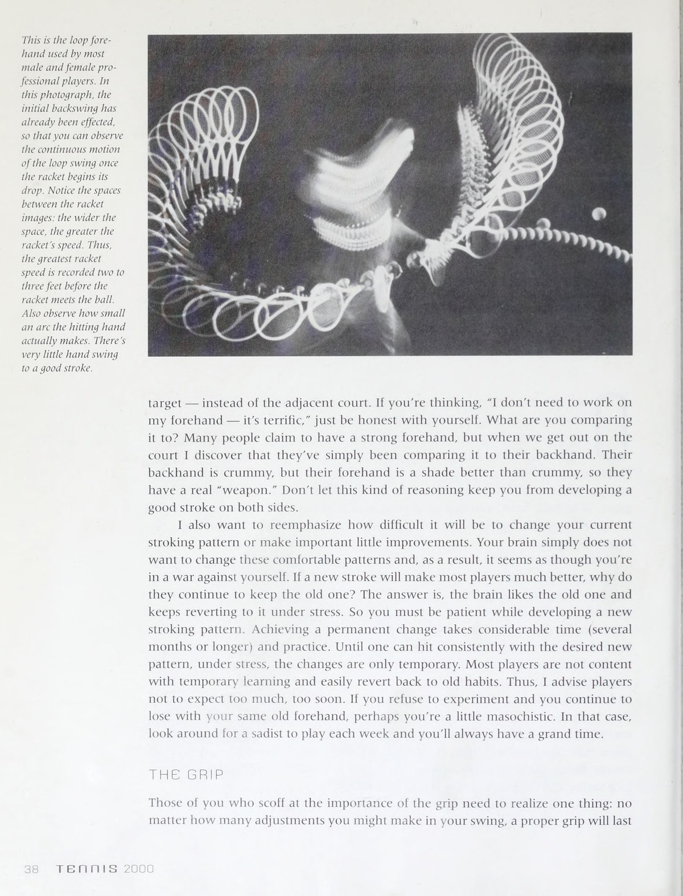
3. Khóa Khớp Cổ Tay & Lòng Bàn Tay Định Hướng (The Fixed Wrist & Palm)
Đây là một trong những đóng góp mang tính bước ngoặt của Vic Braden cho khoa học huấn luyện quần vợt. Hầu hết người chơi phong trào thất bại vì họ cố gắng "bẻ" hoặc "vẩy" cổ tay để tạo lực hoặc xoáy.
Braden chứng minh trên phim quay chậm: tại thời điểm va chạm, góc giữa cẳng tay và cán vợt là hoàn toàn cố định (khoảng 90 đến 110 độ tùy kiểu cầm). Lòng bàn tay hướng thẳng về phía mục tiêu mong muốn và giữ nguyên độ vững chãi. Xoáy topspin không đến từ sự chuyển động độc lập của khớp cổ tay; xoáy đến từ góc mặt vợt nghiêng nhẹ kết hợp với quỹ đạo vung toàn bộ cánh tay từ thấp lên cao.
| Lỗi Thường Gặp Cú Thuận Tay | Nguyên Nhân Cơ Học Thực Tế | Cách Khắc Phục Theo Vic Braden |
|---|---|---|
| Bóng liên tục bay lệch sang trái | Điểm tiếp xúc bóng bị trễ phía sau hông hoặc xoay vai quá sớm trước khi vợt kịp tới điểm tiếp xúc. | Tập trung bước chân lên phía trước, gặp bóng sớm trước thân người từ 30 đến 45 centimet. |
| Bóng bay lệch sang phải (với người thuận tay phải) | Mặt vợt bị mở ngửa do cổ tay lỏng lẻo bị bóng đẩy lùi về phía sau khi chạm bóng tốc độ cao. | Khóa chặt cổ tay trước khi chạm bóng, giữ lòng bàn tay hướng thẳng vào mục tiêu định đánh. |
| Bóng rúc lưới liên tục | Đầu vợt không hạ đủ sâu dưới bóng hoặc trọng tâm cơ thể bị ngả về phía sau khi chạm bóng. | Khuỵu sâu đầu gối, hạ đầu vợt thấp hơn quả bóng tối thiểu 30cm và vươn người lên khi tiếp xúc. |
| Bóng bay vọt ra ngoài vạch baseline | Đánh bóng bằng quỹ đạo thẳng tuột thiếu xoáy topspin hoặc ngửa mặt vợt lên trời khi tiếp xúc. | Vuốt bóng từ thấp lên cao và hoàn thiện động tác kết thúc vợt cao ngang tai đối diện. |
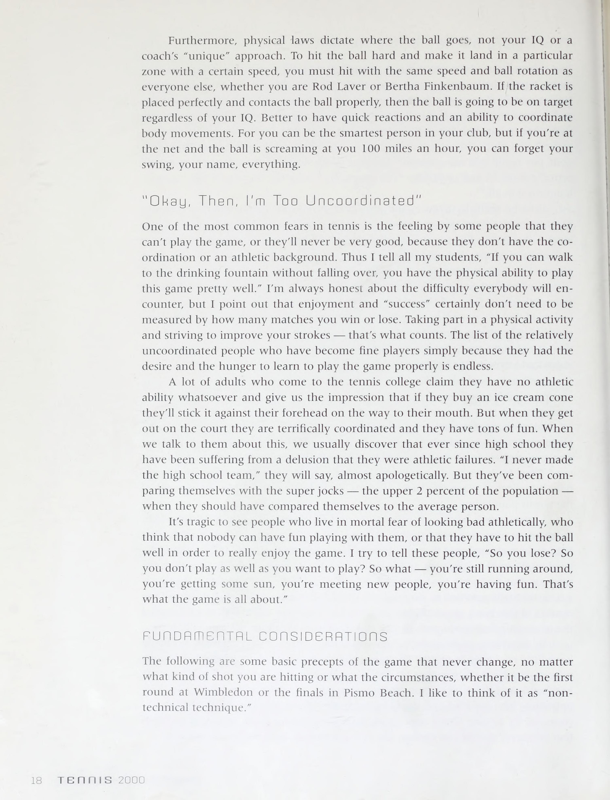
Chương 4: Cú Trái Tay (The Backhand)
Nhiều người chơi sợ hãi cú trái tay và xem nó như một gánh nặng phòng ngự. Vic Braden khẳng định: "Cú trái tay thực chất là cú đánh tự nhiên và có kết cấu giải phẫu học cơ thể vững chắc hơn nhiều so với cú thuận tay, bởi vì xương và khớp vai được căn chỉnh hoàn hảo theo hướng bóng."
1. Quyết Định Lớn: Trái Tay Một Tay Hay Hai Tay?
Braden cung cấp một bảng tiêu chí khoa học giúp người chơi lựa chọn phong cách phù hợp nhất với thể trạng của mình:
- Trái tay một tay (One-Handed Backhand): Cho tầm với rộng hơn, khả năng chuyển đổi linh hoạt sang cú cắt slice phòng ngự hoặc lên lưới bắt volley cực nhanh. Tuy nhiên, nó đòi hỏi lực vai và cẳng tay rất khỏe cùng khả năng căn thời gian chạm bóng cực kỳ chuẩn xác trước thân người.
- Trái tay hai tay (Two-Handed Backhand): Bổ sung sức mạnh của tay không thuận (tay trái đối với người thuận tay phải, đóng vai trò như một cú thuận tay tay trái đầy uy lực). Cung cấp sự ổn định vượt trội khi đối đầu với bóng xoáy nảy cao và những quả giao bóng sấm sét. Rất phù hợp cho phụ nữ, trẻ em và người chơi có lực cẳng tay trung bình.
2. Chuỗi Động Học Cú Trái Tay Chuẩn Mực
Để thực hiện một cú trái tay topspin một tay hủy diệt, người chơi cần tuân thủ nghiêm ngặt các bước sau:
- Xoay vai sớm (The Early Shoulder Turn): Ngay khi nhận diện bóng bay sang cánh trái, hãy xoay toàn bộ vai vuông góc với lưới sao cho lưng trên hơi hướng về phía đối thủ. Đây là hành động nén dây cót cơ học quan trọng nhất.
- Chuyển đổi cán vợt chính xác: Xoay tay cầm về kiểu Miền Đông trái tay (Eastern Backhand Grip), nơi khớp đốt ngón trỏ đặt lên cạnh số 1 trên đỉnh cán vợt.
- Đầu gối uốn cong và hạ đầu vợt: Hạ thấp trọng tâm bằng cách chùng cả hai đầu gối, đầu vợt chúc xuống dưới quỹ đạo bóng bay tới.
- Nâng bóng bằng toàn bộ cơ thể: Đạp chân duỗi thẳng, xoay hông và vung vợt chéo lên trên. Cổ tay khóa tuyệt đối ở tư thế vững chắc, không bao giờ để đầu vợt gãy gập.
- Kết thúc kiêu hãnh (Proud Chest Follow-Through): Cánh tay cầm vợt vươn cao qua vai phải, ngực mở rộng hướng về phía trước, tay không thuận duỗi thẳng ra phía sau để giữ thăng bằng đối trọng hoàn hảo.
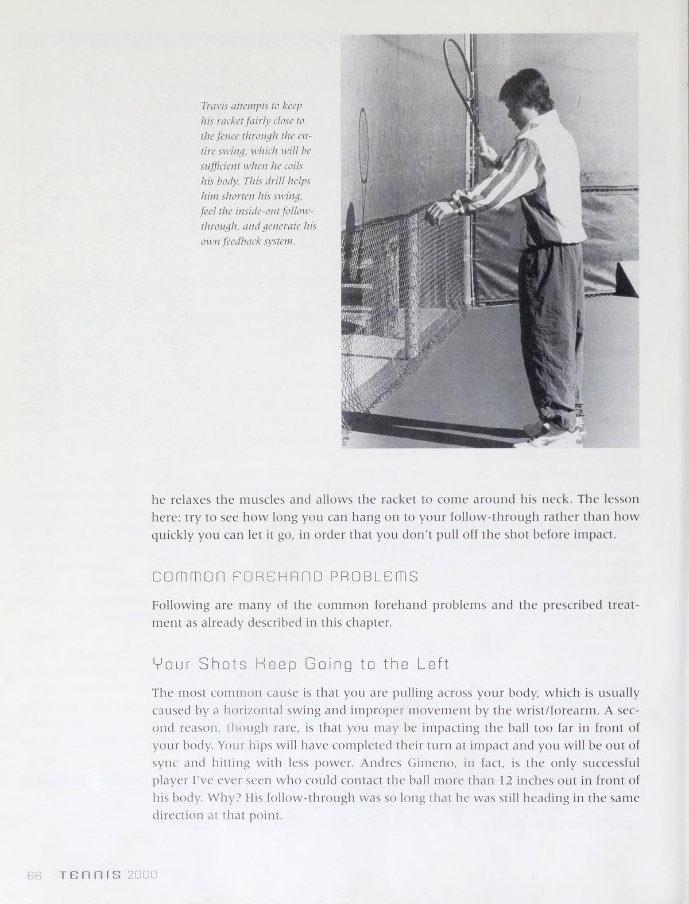
PHẦN 3: CHIẾN THUẬT BẮT LƯỚI, GIAO BÓNG VÀ TRẢ GIAO BÓNG HIỆN ĐẠI
— Vic Braden
Chương 5: Cú Tiếp Cận, Bắt Lưới, Đập Bóng & Lốp Bóng (Approach Shots, Volleys, Overheads & Lobs)
Trong kỷ nguyên quần vợt hiện đại, việc tiến lên chiếm lĩnh vị trí trên lưới vẫn là phương thức dứt điểm điểm số hiệu quả nhất nếu được thực hiện đúng thời điểm và có sự chuẩn bị kỹ lưỡng.
1. Cú Đánh Tiếp Cận (The Approach Shot)
Sai lầm phổ biến nhất của người chơi là lao lên lưới một cách thiếu suy nghĩ sau một cú đánh nông hoặc yếu ớt. Vic Braden đưa ra quy tắc vàng về "vùng bóng ngắn" (Short Ball Range):
- Nhận diện bóng ngắn: Chỉ tiến lên lưới khi đối thủ trả bóng rơi ngắn phía trong vạch giao bóng hoặc cách lưới dưới 6 mét.
- Đánh sâu và thấp: Mục tiêu của cú tiếp cận không phải là một cú dứt điểm ăn điểm trực tiếp rực rỡ, mà là một quả bóng sâu sát vạch cuối sân hoặc xoáy cắt trượt thấp khiến đối thủ buộc phải đánh ngửa vợt lên.
- Bước chia tách (The Split-Step): Dừng lại và thực hiện bước chia tách thăng bằng ngay trước khi đối thủ chạm bóng, không bao giờ vừa chạy cắm đầu vừa cố bắt volley.
2. Kỹ Thuật Bắt Volley Gọn Gàng (The Compact Punch Volley)
Thời gian bóng bay từ cuối sân đến vị trí đứng lưới chỉ dao động từ 0.3 đến 0.6 giây. Bất kỳ động tác vung vợt ra sau rộng nào cũng sẽ dẫn đến việc chạm bóng muộn màng sau vai.
Cú Đấm Ngắn Không Đà Lùi
Hãy tưởng tượng bạn đang tung một cú đấm thẳng (Jab) trong quyền anh. Đầu vợt luôn nằm trong tầm nhìn phía trước mắt. Tuyệt đối không đưa đầu vợt vượt ra phía sau mặt phẳng của vai.
Kiểu Cầm Continental Vạn Năng
Sử dụng một kiểu cầm duy nhất cho cả volley thuận tay và trái tay. Điều này triệt tiêu hoàn toàn thời gian hao phí để đổi kiểu cầm khi bóng bay với tốc độ cao về phía người bạn.
Bước Chân Chuyển Trọng Lực
Bước chân chéo về phía trước khi tiếp xúc bóng để truyền toàn bộ trọng lượng cơ thể vào mặt vợt, tạo độ nặng và triệt tiêu độ rung mà không cần gồng cơ bắp tay.
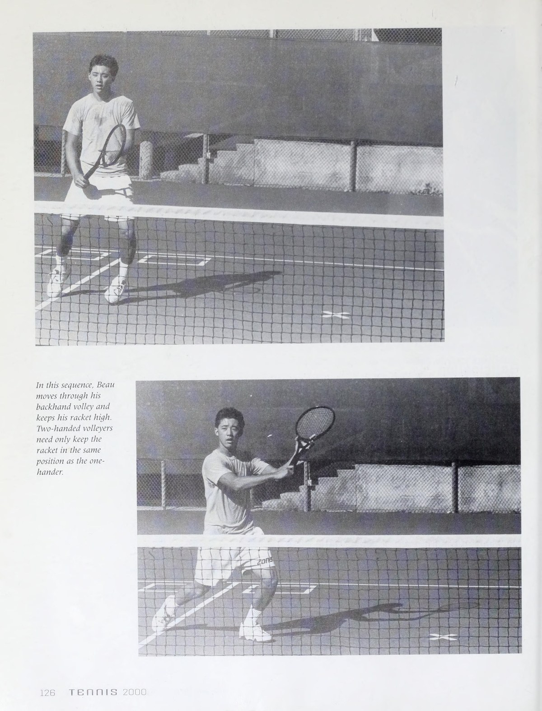
3. Cú Đập Bóng Trên Đầu (The Overhead Smash)
Khi đối thủ tung cú lốp bóng phòng thủ, cú đập bóng là đòn trừng phạt quyết định. Vic Braden hướng dẫn các bước kỹ thuật then chốt:
- Xoay nghiêng thân người ngay lập tức: Đừng bao giờ lùi thẳng người về sau. Hãy quay nghiêng vai và dùng bước trượt ngang (Side-to-Side Shuffle) để lùi lại phía sau vị trí bóng rơi.
- Chỉ tay không thuận lên trời: Giơ ngón trỏ tay trái chỉ thẳng vào quả bóng trên không để định vị không gian và giữ thăng bằng cho bờ vai.
- Kéo vợt ra sau gáy hình chữ L: Đưa vợt vào tư thế nạp lực giống như chuẩn bị ném bóng chày.
- Động tác nhảy kéo cắt (Scissor Kick): Nhảy bật lên và hoán đổi vị trí hai chân trên không trung khi chạm bóng để tạo góc cắm bóng sắc nét và giải phóng toàn bộ xung lượng.
Chương 6: Cơ Học Cú Giao Bóng (The Serve Mechanics)
Cú giao bóng là cú đánh duy nhất trong quần vợt mà bạn hoàn toàn làm chủ mọi yếu tố, không phụ thuộc vào tốc độ, độ xoáy hay hướng bóng của đối phương.
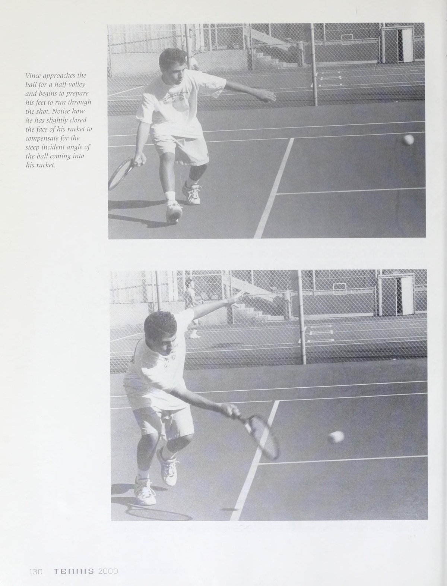
| Yếu Tố Kỹ Thuật Giao Bóng | Phân Tích Cơ Sinh Học Của Vic Braden | Hậu Quả Nếu Làm Sai |
|---|---|---|
| Kiểu cầm vợt Continental | Cầm cạnh số 2 của cán vợt. Đây là tư thế giải phẫu bắt buộc để cổ tay và cẳng tay có thể phát huy động tác xoay úp cẳng tay (Pronation). | Nếu cầm kiểu Eastern thuận tay, bạn chỉ có thể đẩy bóng phẳng và rất dễ gặp chấn thương rách cơ chóp xoay vai (Rotator Cuff). |
| Vị trí tung bóng (The Toss) | Tung bóng hơi chếch về phía trước góc 1 giờ (cho người thuận tay phải), bóng rơi vào trong sân khoảng 30 đến 45cm so với vạch baseline. | Tung bóng quá ra sau đầu khiến bạn phải ưỡn lưng quá mức, làm giảm 40% lực đánh và gây thoái hóa đốt sống thắt lưng. |
| Khuỵu gối tạo lò xo nén | Uốn cong cả hai đầu gối khi đưa vợt vào tư thế ngắm (Trophy Pose), biến đôi chân thành bệ phóng tên lửa đẩy cơ thể vươn cao. | Đứng thẳng chân khiến toàn bộ gánh nặng phát lực dồn hết lên khớp vai, dẫn đến suy kiệt thể lực sau set đầu tiên. |
| Động tác xoay cẳng tay (Pronation) | Mặt vợt tiếp cận bóng bằng cạnh ngoài, sau đó xoay úp từ trong ra ngoài vào phần nghìn giây va chạm để giải phóng tốc độ tối đa. | Thiếu pronation khiến cú giao bóng thiếu độ bùng nổ và không thể tạo ra các biến thể xoáy nguy hiểm. |
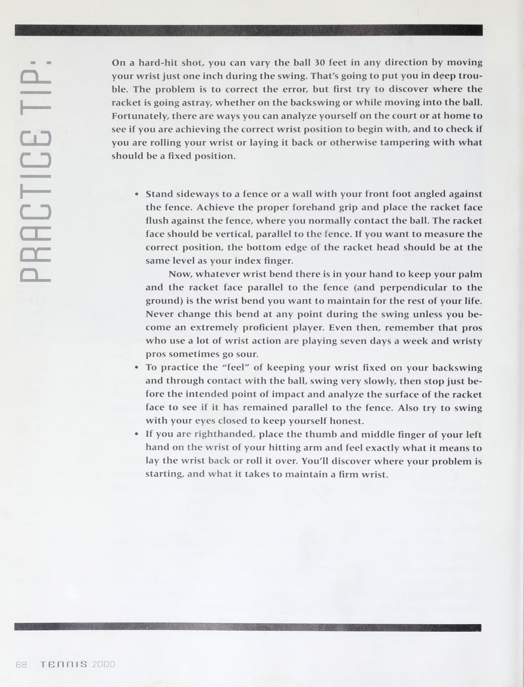
Chương 7: Kỹ Thuật Trả Giao Bóng (The Service Return)
Trả giao bóng là cú đánh quan trọng thứ hai trong trận đấu. Để vô hiệu hóa những quả giao bóng sấm sét của đối thủ, Vic Braden đề ra các nguyên tắc sinh tồn:
- Thu hẹp biên độ vung vợt: Cắt giảm 70% đà đưa vợt ra sau. Sử dụng cú chặn ngắn (Block Return) mượn chính tốc độ bóng của đối phương để trả ngược lại.
- Bước chia tách đồng bộ với nhịp tung bóng: Bật nhẹ cả hai chân khi người giao bóng bắt đầu chạm vào bóng, hạ thấp trọng tâm để sẵn sàng bứt phá về mọi hướng.
- Mục tiêu chiến thuật an toàn: Đánh trả sâu vào giữa sân (Center Deep) hoặc cắt bóng trượt thấp xuống ngay dưới chân người giao bóng khi họ lao lên lưới bắt volley.
PHẦN 4: CHIẾN THUẬT THỰC CHIẾN, ĐÁNH ĐÔI, TÂM LÝ & THỂ LỰC SUỐT ĐỜI
— Vic Braden & Bill Bruns
Chương 8: Chiến Thuật Đánh Đơn & Nghệ Thuật Khắc Chế "Dinker"
Vic Braden chia sẻ rằng phần lớn người chơi phong trào thất bại không phải vì thiếu kỹ thuật, mà vì họ lựa chọn những mục tiêu có xác suất rủi ro quá cao.
1. Quy Tắc Biên Độ An Toàn 3 Feet (The 3-Foot Margin Rule)
Khi quan sát qua camera định vị, Braden phát hiện ra rằng việc nhắm bóng sát mép dây trắng hoặc lướt sát mép lưới là nguyên nhân trực tiếp dẫn tới 85% các pha tự hủy điểm số:
- Cách lưới 3 feet (1 mét): Luôn đánh bóng bay cao hơn mép lưới tối thiểu 3 feet. Chiều cao này cung cấp vùng đệm an toàn tuyệt đối trước mọi cơn gió giật hoặc sai lệch nhỏ về góc tiếp xúc mặt vợt.
- Cách vạch biên 3 feet: Đặt mục tiêu rơi bóng cách đường biên dọc và đường baseline vào phía trong sân ít nhất 3 feet. Một quả bóng rơi cách vạch 1 mét với tốc độ và độ xoáy tốt vẫn khiến đối thủ lúng túng tương tự một quả bóng liếm vạch, nhưng loại trừ 100% nguy cơ bóng ra ngoài.
2. Khắc Chế Lối Đánh "Dinker" & "Bóng Rác" (Junk Ballers)
Không có đối thủ nào gây ức chế tâm lý cho người chơi có kỹ thuật đẹp mắt hơn những tay vợt "Dinker" — những người chỉ đánh bóng bổng, bóng chậm, không có lực và không theo bất kỳ quy chuẩn sách vở nào. Vic Braden đưa ra phác đồ giải độc:
Giữ Vững Bình Tĩnh Tâm Lý
Hãy chấp nhận rằng trận đấu này sẽ diễn ra giằng co và thiếu sự hào nhoáng. Đừng bao giờ nổi nóng hoặc vội vã tung ra cú đánh kết liễu liều lĩnh chỉ vì bạn cảm thấy khó chịu trước nhịp độ chậm chạp của đối phương.
Chủ Động Tiến Vào Sân Đón Bóng
Bóng của Dinker thường rơi rất ngắn và không có lực đẩy. Nếu bạn đứng yên ở baseline chờ bóng rơi, bóng sẽ chết dần trên mặt sân. Bạn phải chủ động di chuyển chân lướt vào trong sân đón bóng ở điểm cao nhất của quỹ đạo nảy.
Đánh Bóng Sâu Với Độ Xoáy Topspin
Đừng cố bắt chước lối đánh bạt phẳng của họ. Hãy khuỵu sâu gối, vuốt một cú topspin sâu hướng về phía giữa sân của đối thủ. Lối đánh này tước đi góc mở phản công của Dinker và ép họ lùi sâu vào chân tường.
Chương 9: Tâm Lý Học Thi Đấu & Giải Mã Các Kiểu Tính Cách
Là một nhà tâm lý học thể thao được đào tạo bài bản, Vic Braden đã phác họa bức tranh hài hước nhưng cực kỳ sâu sắc về các kiểu nhân vật thường gặp trên sân quần vợt phong trào:
| Kiểu Người Chơi | Hành Vi Điển Hình Trên Sân | Chiến Thuật Tâm Lý Ứng Phó |
|---|---|---|
| Kẻ Cuồng Thiết Bị (The Equipment Freak) | Sở hữu mọi loại vợt đời mới nhất, túi đựng đồ chuyên nghiệp, thay dây sau mỗi tuần nhưng kỹ thuật cơ bản lại vô cùng lỏng lẻo. | Kéo dài các loạt bền bóng sâu. Khi họ nhận ra cây vợt đắt tiền không thể tự động đưa bóng vào sân, họ sẽ nhanh chóng sụp đổ tâm lý. |
| Người Tính Điểm Bất An (The Scorekeeper) | Liên tục quên điểm số hoặc cố tình nhớ sai tỷ số theo chiều hướng có lợi cho bản thân khi trận đấu bước vào thời khắc then chốt. | Luôn chủ động hô to tỷ số một cách dõng dạc và lịch thiệp trước mỗi lần thực hiện lượt giao bóng để khóa chặt mọi ý đồ tranh cãi. |
| Kẻ Bắt Lỗi Gian Lận (The Player with Two-Inch Eyes) | Có thói quen bắt bóng chạm vạch thành bóng ra ngoài từ khoảng cách hai đốt ngón tay nhằm đánh cắp điểm số quyết định. | Không sa đà vào cãi vã vô ích. Hãy nhắm các cú đánh vào sâu bên trong sân cách vạch biên 1 mét, tước bỏ hoàn toàn cơ hội bắt bóng ngoài của họ. |
| Kẻ Bạo Lực & Nổi Loạn (The Sadist / Manipulator) | Cố tình phát bóng đập người đối thủ ở cự ly gần hoặc đập vợt chửi thề để làm phân tâm và uy hiếp tinh thần đối phương. | Duy trì ánh mắt lạnh lùng, tuyệt đối không phản ứng cảm xúc. Sự điềm tĩnh vững vàng của bạn chính là liều thuốc độc bẻ gãy ý chí của họ. |
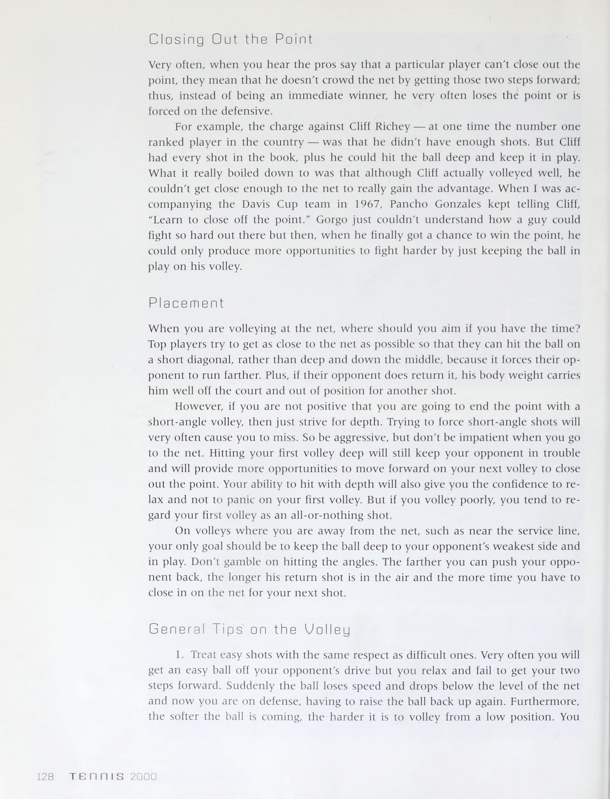
Chương 10: Khám Phá Nghệ Thuật Đánh Đôi Đỉnh Cao
Đánh đôi là một bộ môn hoàn toàn khác biệt so với đánh đơn. Nó đòi hỏi sự ăn ý, khả năng bọc lót không gian và sự phân chia trách nhiệm rõ ràng giữa hai thành viên trong đội.
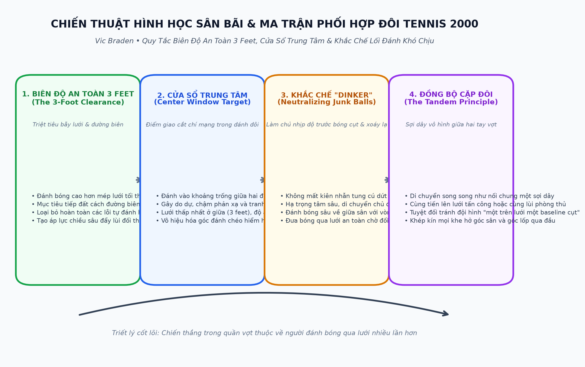
1. Nguyên Lý Dây Nối Đồng Bộ (The Tandem Principle)
Hãy tưởng tượng có một sợi dây vô hình dài khoảng 6 đến 8 mét nối chặt hai chiếc thắt lưng của bạn và người đồng đội:
- Khi đồng đội bị đối thủ ép phải dạt sang góc trái, bạn phải lập tức di chuyển theo sang hướng trái để bịt kín khoảng trống trung lộ.
- Khi một người tiến lên chiếm lưới tấn công, người còn lại cũng phải nhanh chóng dâng lên để tạo thành một bức tường thép song song tại lưới. Tuyệt đối tránh mô hình một người đứng cao một người đứng thấp ở lưng chừng sân (vùng đất chết).
2. Tấn Công Cửa Sổ Trung Tâm (The Center Window)
Hầu hết các cặp đôi thường bất hòa khi đối phương liên tục đánh bóng vào chính giữa hai người. Đó là điểm giao cắt mù (The Center Window). Lưới ở giữa sân thấp hơn hai bên cột tới 15 centimet, tạo độ an toàn cao nhất cho cú đánh. Khi bạn liên tục dồn bóng vào khe giữa, hai đối thủ sẽ rơi vào trạng thái do dự, nhường nhau hoặc va đập vợt vào nhau trong bối rối.
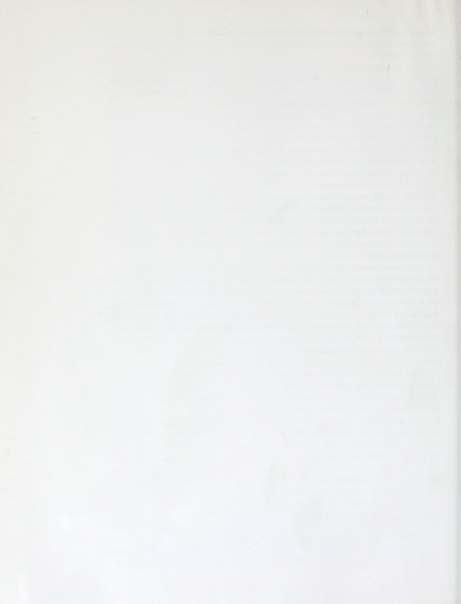
Chương 11: Rèn Luyện Thể Lực, Lập Trình Cơ Bắp & Đam Mê Quần Vợt Suốt Đời
Để có thể cầm vợt tới năm 70 hay 80 tuổi mà không phải chịu đựng các ca phẫu thuật khớp đau đớn, Vic Braden đúc kết những nguyên tắc bảo dưỡng cơ thể then chốt:
- Lập trình vận động thần kinh (Motor Programming): Bộ não học kỹ thuật thông qua việc lặp đi lặp lại những chuyển động chuẩn xác ở tốc độ chậm. Hãy dành thời gian tập luyện trước gương hoặc tập với máy bắn bóng và tường tập để cơ bắp ghi nhớ quỹ đạo vung vợt tự nhiên.
- Tăng cường khối cơ cốt lõi (Core Conditioning): Vùng bụng và lưng dưới chính là trục truyền lực trung tâm của mọi cú đánh. Một cơ bụng khỏe khoắn giúp bảo vệ cột sống khỏi các áp lực xoắn vặn khi giao bóng và tiếp đất.
- Giữ gìn niềm vui thuần khiết của trò chơi: Quần vợt là một món quà tuyệt vời dành cho sức khỏe và tình bạn. Đừng để những điểm số thắng thua ngắn hạn làm lu mờ niềm hạnh phúc khi được sải bước trên sân ngập tràn ánh nắng và nghe tiếng bóng nảy giòn giã trên mặt vợt.